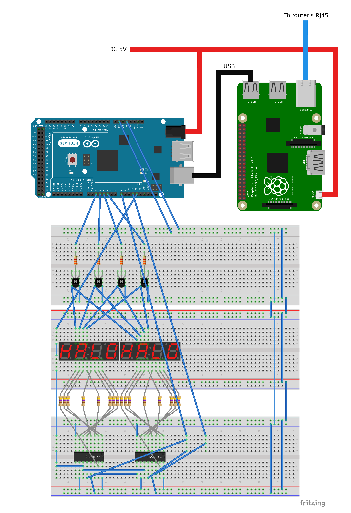

В прошлый раз мы сделали индикатор на котором можно показывать восемь цифр. Но чтобы сказать ему какую цифру отобразить нам надо постоянно перезаливать программу через Arduino IDE, что очень неудобно.
Можно добавить в arduino-скетч код который будет слушать данные через Serial-интерфейс и сообщать ему число используя Serial Monitor.
А что если пойти дальше и сделать настоящий IoT-проект?! Пусть наш индикатор будет подключен к Интернет, а управлять им будет маленькое web-приложение, работающее в браузере.
Возьмите карту microSD и установите на нее операционную систему Raspbian.
Тут подробно расписано как готовить карту памяти.
Как только карта памяти готова, вставьте ее в Raspi, подключите Raspi к вашему домашнему маршрутизатору используя RJ45 кабель.
Теперь подключайте Raspi к источнику питания. Если карта памяти была подготовлена правильно то Raspi успешно загрузится.
Все готово для подключения к Raspi через SSH. Чтобы настроить SSH на вашем ноутбуке следуйте инструкциям:
Установите Arduino IDE.
Подключите Arduino к USB порту вашего ноутбука.
Используйте этот код для прошивки микроконтроллера. Используя IDE залейте код в плату.
На индикаторе должно отображаться число 12345678.
Если вдруг отображается что-то другое или вообще не видно цифр, проверьте внимательно все проводки и соединения.
Отключите теперь все от питания и соберите компоненты согласно схеме:

Arduino подключите к Raspberry тем же самым USB кабелем который вы используете для соединения с ноутбуком.
Для питания Arduino и Raspi мы используем один и тот же источник питания.
Питание к Arduino подключайте через barrel jack, 5 вольт.
Питание к Raspi идет через MicroUSB разъем, 5 вольт.
Обе линии питания имеют общее соединение.
Подсоедините Raspi к маршрутизатору через сетевой кабель со штекером RJ45 либо используйте Wi-Fi адаптер подключаемый к USB.
Когда вы открываете в браузере IP адрес Raspi, web-сервер выдаст страницы web-приложения которые отобразят UI для управления индикатором:
192.168.1.2↔Lighttpd↔WEB-app
На UI есть кнопка Connect, по нажатию на которую JavaScript-код установит соединение с Raspi по протоколу Web Socket.
WEB-app↔Web Socket↔Python3 code
На Raspi код на Python3 примет Web Socket соединение.
Дальше в UI есть поле для ввода числа и кнопка Send. По нажатию на нее web-приложение отправит frame на нашу Raspi. После обработки фрейма, python3-код откроет Serial соединение к Arduino и передаст по-байтам число. Дальше скетч уже просто его отобразит.